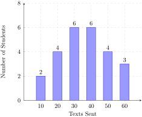
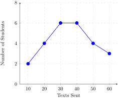
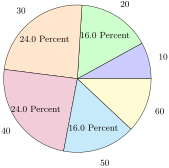
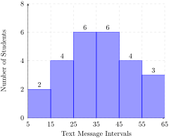

1. Data Representation: Daily Text Messages Sent.
The following dataset represents the number of text messages sent by \(25\) high school students during a single day:
40, 20, 20, 50, 30, 30, 60, 20, 30, 40, 30, 10, 40, 50, 40, 30, 30, 40, 40, 50, 60, 20, 50, 60, 10
-
Complete a frequency table for the text message counts.
-
Construct a bar graph of the data.
-
Construct a line graph of the data.
-
Construct a pie chart of the data.
-
Construct a histogram of the data using 10-point class intervals.
Solution.
(a) Frequency Table: Sorting and counting each distinct message count yields the following frequency distribution:
| Texts Sent | Frequency (Students) |
|---|---|
| 10 | 2 |
| 20 | 4 |
| 30 | 6 |
| 40 | 6 |
| 50 | 4 |
| 60 | 3 |
(b) Bar Graph: We represent each distinct count value on the horizontal axis and its corresponding frequency on the vertical axis using separated columns:

(c) Line Graph: Using coordinates, data markers are mapped out across consecutive value junctions and tied together using path lines:

(d) Pie Chart: Proportional distributions are evaluated based on a complete baseline of \(n = 25\) students using degree equations:
-
10 Texts: 8.00 percent (28.8 degrees)
-
20 Texts: 16.00 percent (57.6 degrees)
-
30 Texts: 24.00 percent (86.4 degrees)
-
40 Texts: 24.00 percent (86.4 degrees)
-
50 Texts: 16.00 percent (57.6 degrees)
-
60 Texts: 12.00 percent (43.2 degrees)

(e) Histogram: Grouping values into 10-point bins maps the dataset across continuous quantitative intervals, which forces columns to display directly side-by-side:
-
[5, 15): 2 students (values of 10)
-
[15, 25): 4 students (values of 20)
-
[25, 35): 6 students (values of 30)
-
[35, 45): 6 students (values of 40)
-
[45, 55): 4 students (values of 50)
-
[55, 65]: 3 students (values of 60)
